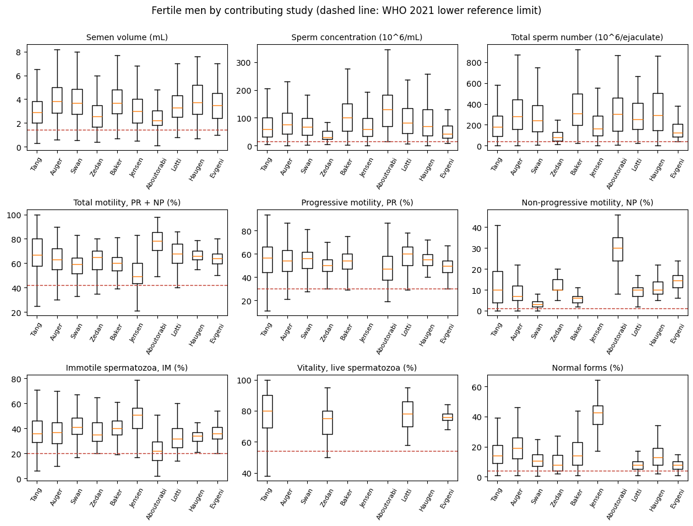

Reproducing Campbell et al. 2021 (WHO 2021 reference distribution)
Independent reproduction of Distribution of semen examination results 2020 - A
follow up of data collated for the WHO semen analysis manual 2010 (Andrology
2021;9:817-822, doi:10.1111/andr.12983) from the authors’ public deposit
Fertile_Man_2020.xlsx (University of Dundee, doi:10.15132/10000163, CC BY),
checking the table that seminal.semen carries.
Sections:
The reference men: studies and completeness
Table 3 (WHO 2020): recompute the nine centiles
Table 2 (2010 to 2020 studies): which studies, and the centiles
Uncertainty on the 5th centile
Heterogeneity between contributing studies
How good is the interpolated percentile?
1. The reference men
make data_gen preprocess saves the deposit as data/processed/fertile_man_2020.parquet
with the nine parameters renamed to the library’s names and NO RESULT set to
missing. Nothing is excluded: the paper used every value present, so the count
of non-missing values per parameter should match the n column of Table 3.
import numpy as np
import pandas as pd
from seminal import semen_reference
from seminal.semen import CENTILES, PARAMETERS
fm = pd.read_parquet("../data/processed/fertile_man_2020.parquet")
params = list(PARAMETERS)
print(f"{len(fm):,} men from {fm['study'].nunique()} studies")
print(fm["study"].value_counts().to_string())
# non-missing per parameter next to the paper's n
pd.DataFrame({"n_deposit": fm[params].notna().sum(), "n_paper": semen_reference()["n"]})
3,589 men from 10 studies
study
Tang 1200
Auger 826
Swan 487
Zedan 240
Baker 206
Jensen 199
Aboutorabi 168
Lotti 105
Haugen 82
Evgeni 76
| n_deposit | n_paper | |
|---|---|---|
| volume | 3586 | 3586 |
| concentration | 3587 | 3587 |
| total_number | 3584 | 3584 |
| total_motility | 3488 | 3488 |
| progressive_motility | 3389 | 3389 |
| nonprogressive_motility | 3387 | 3387 |
| immotile | 2800 | 2800 |
| vitality | 1337 | 1337 |
| normal_forms | 3335 | 3335 |
2. Table 3: recompute the nine centiles
The paper does not state its quantile definition, and with discrete, heavily
tied parameters the definition matters at the printed precision. Trying the
standard ones against the printed table singles out the Weibull definition
(Hyndman and Fan type 6, what SPSS and Excel’s PERCENTILE.EXC use), with
ordinary round-half-up to the printed precision: volume to one decimal,
everything else to whole numbers. Compare the recomputed centiles with the
library’s copy of Table 3.
from decimal import ROUND_HALF_UP, Decimal
Q = [c / 100 for c in CENTILES]
cols = [f"p{c:g}" for c in CENTILES]
def round_half_up(x, decimals):
q = Decimal("0.1") if decimals else Decimal("1")
return float(Decimal(str(float(x))).quantize(q, rounding=ROUND_HALF_UP))
def centile_table(df, method="weibull", rounded=True):
"""Nine centiles per parameter, rounded as the paper prints them."""
out = pd.DataFrame({p: np.quantile(df[p].dropna(), Q, method=method) for p in params}, index=cols).T
if rounded:
for p in params:
out.loc[p] = [round_half_up(v, 1 if p == "volume" else 0) for v in out.loc[p]]
return out
empirical = centile_table(fm)
published = semen_reference()[cols]
diff = empirical - published
print("cells that differ from Table 3:", int((diff != 0).sum().sum()), "of", diff.size)
diff[diff != 0].dropna(how="all").dropna(axis=1, how="all")
cells that differ from Table 3: 1 of 81
| p50 | |
|---|---|
| total_number | -1.0 |
One cell in 81: the median total sperm number comes out at 209.496, which the paper prints as 210 (displayed as 209.5, then rounded). Everything else, including all nine 5th centiles that the WHO manual uses as lower reference limits, matches exactly. With numpy’s default linear interpolation six cells differ by a unit instead, all at the extreme centiles of the discrete parameters.
side_by_side = pd.concat({"deposit": empirical, "paper": published}, axis=1).swaplevel(axis=1).sort_index(axis=1)
side_by_side[[f"p{c:g}" for c in (5, 50, 95)]]
| p5 | p50 | p95 | ||||
|---|---|---|---|---|---|---|
| deposit | paper | deposit | paper | deposit | paper | |
| volume | 1.4 | 1.4 | 3.0 | 3.0 | 6.2 | 6.2 |
| concentration | 16.0 | 16.0 | 66.0 | 66.0 | 208.0 | 208.0 |
| total_number | 39.0 | 39.0 | 209.0 | 210.0 | 701.0 | 701.0 |
| total_motility | 42.0 | 42.0 | 64.0 | 64.0 | 90.0 | 90.0 |
| progressive_motility | 30.0 | 30.0 | 55.0 | 55.0 | 77.0 | 77.0 |
| nonprogressive_motility | 1.0 | 1.0 | 8.0 | 8.0 | 32.0 | 32.0 |
| immotile | 20.0 | 20.0 | 37.0 | 37.0 | 58.0 | 58.0 |
| vitality | 54.0 | 54.0 | 78.0 | 78.0 | 97.0 | 97.0 |
| normal_forms | 4.0 | 4.0 | 14.0 | 14.0 | 39.0 | 39.0 |
3. Table 2: the 2010 to 2020 studies
Table 2 is the subset of studies published after the 2010 manual, n = 1,789 for most parameters. The deposit does not label which studies those are, but only one combination of the ten study sizes sums to 1,789: Tang, Zedan, Aboutorabi, Lotti and Evgeni. The other five (Auger, Swan, Baker, Jensen, Haugen, n = 1,800) are the cohorts behind the 2010 manual.
counts = fm["study"].value_counts()
new_studies = ["Tang", "Zedan", "Aboutorabi", "Lotti", "Evgeni"]
print("2010-2020 studies:", counts[new_studies].sum(), " 2010 cohorts:", counts.drop(new_studies).sum())
sub = fm[fm["study"].isin(new_studies)]
empirical_2 = centile_table(sub)
published_2 = semen_reference(edition="2010_2020")[cols]
diff_2 = empirical_2 - published_2
print("cells that differ from Table 2:", int((diff_2 != 0).sum().sum()), "of", diff_2.size)
diff_2[diff_2 != 0].dropna(how="all").dropna(axis=1, how="all")
2010-2020 studies: 1789 2010 cohorts: 1800
cells that differ from Table 2: 0 of 81
Table 2 reproduces cell for cell with the same definition.
4. Uncertainty on the 5th centile
The paper gives a 95% CI for each 5th centile. Bootstrap the deposit and compare. The CI is what separates “16” from “somewhere in 15 to 18” when a lab reports a concentration of 15.
rng = np.random.default_rng(0)
B = 2000
def boot_p5(s):
s = s.to_numpy()
draws = rng.choice(s, size=(B, len(s)), replace=True)
return np.percentile(np.quantile(draws, 0.05, axis=1, method="weibull"), [2.5, 97.5])
ci = pd.DataFrame({p: boot_p5(fm[p].dropna()) for p in params}, index=["boot_low", "boot_high"]).T
ci.insert(0, "p5", published["p5"])
ci["paper_low"] = semen_reference()["p5_ci_low"]
ci["paper_high"] = semen_reference()["p5_ci_high"]
ci.round(2)
| p5 | boot_low | boot_high | paper_low | paper_high | |
|---|---|---|---|---|---|
| volume | 1.4 | 1.3 | 1.5 | 1.3 | 1.5 |
| concentration | 16.0 | 15.0 | 18.0 | 15.0 | 18.0 |
| total_number | 39.0 | 35.0 | 40.0 | 35.0 | 40.0 |
| total_motility | 42.0 | 40.0 | 43.0 | 40.0 | 43.0 |
| progressive_motility | 30.0 | 29.0 | 31.0 | 29.0 | 31.0 |
| nonprogressive_motility | 1.0 | 1.0 | 1.0 | 1.0 | 1.0 |
| immotile | 20.0 | 19.0 | 20.0 | 19.0 | 20.0 |
| vitality | 54.0 | 50.0 | 56.0 | 50.0 | 56.0 |
| normal_forms | 4.0 | 3.5 | 4.0 | 3.9 | 4.0 |
The bootstrap intervals sit on or inside the published ones. The published CI for normal forms (3.9 to 4.0) is tighter than a bootstrap gives because morphology is reported in whole percent and the 5th centile sits on a plateau of 4s.
5. Heterogeneity between studies
Paffoni et al. (2022) argue the ten studies are not one population. The simplest view is the median of each parameter by study. Differences in motility and morphology between laboratories are much larger than between countries’ men, which is the point: the reference distribution describes the pooled practice of these laboratories as much as fertile men.
import matplotlib.pyplot as plt
by_study = fm.groupby("study")[params].median().loc[counts.index]
by_study["n"] = counts
fig, axes = plt.subplots(3, 3, figsize=(12, 9))
for ax, p in zip(axes.ravel(), params):
data = [fm.loc[fm["study"] == s, p].dropna() for s in counts.index]
ax.boxplot(data, tick_labels=counts.index, showfliers=False)
ax.axhline(published.loc[p, "p5"], color="#C0392B", linestyle="--", linewidth=1)
ax.set_title(PARAMETERS[p], fontsize=10)
ax.tick_params(axis="x", rotation=60, labelsize=8)
fig.suptitle("Fertile men by contributing study (dashed line: WHO 2021 lower reference limit)", y=1.0)
fig.tight_layout()
plt.show()
by_study.round(1)

| volume | concentration | total_number | total_motility | progressive_motility | nonprogressive_motility | immotile | vitality | normal_forms | n | |
|---|---|---|---|---|---|---|---|---|---|---|
| study | ||||||||||
| Tang | 2.9 | 60.0 | 178.0 | 67.0 | 56.5 | 10.0 | 36.0 | 80.0 | 14.0 | 1200 |
| Auger | 3.8 | 75.0 | 278.5 | 63.0 | 54.0 | 7.0 | 37.0 | NaN | 19.0 | 826 |
| Swan | 3.7 | 66.9 | 239.7 | 59.0 | 56.0 | 3.0 | 41.0 | NaN | 10.5 | 487 |
| Zedan | 2.6 | 30.0 | 83.0 | 65.0 | 50.0 | 10.0 | 35.0 | 75.0 | 8.0 | 240 |
| Baker | 3.6 | 101.0 | 308.4 | 60.0 | 54.0 | 6.0 | 40.0 | NaN | 14.0 | 206 |
| Jensen | 3.0 | 60.0 | 162.0 | 49.0 | NaN | NaN | 51.0 | NaN | 42.5 | 199 |
| Aboutorabi | 2.2 | 130.0 | 301.6 | 78.5 | 47.0 | 30.0 | 22.0 | NaN | NaN | 168 |
| Lotti | 3.3 | 82.0 | 252.0 | 68.0 | 60.0 | 10.0 | 32.0 | 78.0 | 8.0 | 105 |
| Haugen | 3.7 | 70.0 | 290.2 | 66.0 | 55.0 | 10.0 | 34.0 | NaN | 13.0 | 82 |
| Evgeni | 3.5 | 43.0 | 127.0 | 64.0 | 49.5 | 14.5 | 36.0 | 76.0 | 8.0 | 76 |
Two things stand out. Immotile and vitality are missing for whole studies (hence their smaller n in the table), and the morphology medians range from about 5% to over 20% between laboratories, a spread no biological difference between fertile men explains. A lab comparing its own patients to these centiles is comparing against a mixture.
6. How good is the interpolated percentile?
semen_percentile interpolates between the nine published centiles because
the full distribution is not published. With the deposit in hand, compare it
to the empirical percentile of every man (his rank among the reference men).
from seminal import semen_percentile
rows = []
for p in params:
s = fm[p].dropna().to_numpy()
emp = pd.Series(s).rank(pct=True).to_numpy() * 100 # empirical percentile
lib = semen_percentile(p, s) # interpolated from Table 3
inside = (emp >= 2.5) & (emp <= 97.5) # where interpolation applies
err = np.abs(lib - emp)[inside]
rows.append({"parameter": p, "n": len(s), "median_abs_err": np.median(err),
"p95_abs_err": np.percentile(err, 95), "max_abs_err": err.max()})
pd.DataFrame(rows).set_index("parameter").round(2)
| n | median_abs_err | p95_abs_err | max_abs_err | |
|---|---|---|---|---|
| parameter | ||||
| volume | 3586 | 0.83 | 4.17 | 7.99 |
| concentration | 3587 | 0.65 | 2.52 | 2.94 |
| total_number | 3584 | 0.61 | 2.36 | 2.61 |
| total_motility | 3488 | 1.38 | 2.33 | 4.05 |
| progressive_motility | 3389 | 1.03 | 2.64 | 4.10 |
| nonprogressive_motility | 3387 | 1.08 | 3.25 | 4.86 |
| immotile | 2800 | 0.45 | 1.40 | 2.76 |
| vitality | 1337 | 0.99 | 3.49 | 5.51 |
| normal_forms | 3335 | 0.68 | 3.97 | 4.05 |
Inside the published range the interpolated percentile is typically within a point or two of the empirical one; the largest errors are on the discrete, heavily tied parameters (non-progressive motility, normal forms) between the 25th and 75th centiles, where the published grid is coarsest. For a clinical read (“about the 30th centile”) that is adequate; for anything finer, use the deposit directly.
7. Scoring a cohort with add_semen_percentile_cols
Everything above recomputes the table. In practice you have a cohort and want
to know where each man sits against the fertile-man reference.
add_semen_percentile_cols takes a DataFrame and a mapping of parameter name
to column name ({"concentration": "conc", ...}) and adds, per parameter, a
percentile column (_pct, 2.5 to 97.5) and a below-limit flag
(_below_lrl, below the WHO 5th centile). Here the deposit’s columns already
carry the parameter names, so the mapping can be omitted.
Scoring the reference men is also a self-check: by construction about 5% of them fall below each limit.
from seminal import add_semen_percentile_cols
scored = add_semen_percentile_cols(fm)
# share below the lower reference limit, per parameter (expect ~5%)
flags = [f"{p}_below_lrl" for p in params]
below = scored[flags].mean().rename(lambda c: c.replace("_below_lrl", "")) * 100
pd.DataFrame({"n": fm[params].notna().sum(), "% below LRL": below.round(1)})
| n | % below LRL | |
|---|---|---|
| volume | 3586 | 4.7 |
| concentration | 3587 | 4.9 |
| total_number | 3584 | 5.1 |
| total_motility | 3488 | 5.0 |
| progressive_motility | 3389 | 4.7 |
| nonprogressive_motility | 3387 | 2.9 |
| immotile | 2800 | 4.9 |
| vitality | 1337 | 4.6 |
| normal_forms | 3335 | 4.3 |
The pooled rate is 5% because the limits were derived from these men. Per
study it is not, which is the heterogeneity of section 5 in the units a clinic
would see: the share of its fertile men that a WHO-based report would flag. Note the direction for immotile: a man flags when
his immotile fraction is below the 5th centile, which is the favourable end,
so that column reads as “unusually few immotile sperm” rather than as a
deficit. Aboutorabi’s 40% there is a scoring convention, not biology.
by_study_flag = scored.groupby("study")[flags].mean().loc[counts.index] * 100
by_study_flag.columns = [c.replace("_below_lrl", "") for c in flags]
by_study_flag["n"] = counts
by_study_flag.round(1)
| volume | concentration | total_number | total_motility | progressive_motility | nonprogressive_motility | immotile | vitality | normal_forms | n | |
|---|---|---|---|---|---|---|---|---|---|---|
| study | ||||||||||
| Tang | 5.2 | 3.3 | 4.2 | 5.8 | 7.3 | 4.3 | 3.7 | 6.3 | 2.5 | 1200 |
| Auger | 2.3 | 5.3 | 3.6 | 3.4 | 3.4 | 0.6 | 3.8 | <NA> | 3.2 | 826 |
| Swan | 3.3 | 7.0 | 6.0 | 7.0 | 3.5 | 8.2 | 1.2 | <NA> | 7.4 | 487 |
| Zedan | 4.6 | 9.2 | 16.7 | 1.7 | 1.2 | 0.0 | 0.0 | 1.7 | 4.6 | 240 |
| Baker | 5.8 | 1.5 | 1.5 | 5.3 | 2.4 | 0.0 | 0.5 | <NA> | 4.9 | 206 |
| Jensen | 6.5 | 6.5 | 7.0 | 19.2 | <NA> | <NA> | 8.0 | <NA> | 0.5 | 199 |
| Aboutorabi | 15.5 | 0.6 | 4.2 | 0.6 | 6.0 | 0.0 | 40.5 | <NA> | <NA> | 168 |
| Lotti | 2.9 | 5.7 | 3.8 | 5.7 | 5.7 | 0.0 | 4.8 | 0.0 | 16.2 | 105 |
| Haugen | 2.4 | 8.5 | 6.1 | 1.2 | 3.7 | 0.0 | 0.0 | <NA> | 8.8 | 82 |
| Evgeni | 2.6 | 6.6 | 0.0 | 0.0 | 0.0 | 0.0 | 0.0 | 0.0 | 9.2 | 76 |
Three things decide whether the scored columns mean anything on another dataset:
Units must match
PARAMETERS[name]["unit"]: mL, 10^6/mL, 10^6 per ejaculate, and percentages on a 0 to 100 scale. A motility column stored as a fraction (0.55) scores as the 2.5th centile; multiply by 100 first. If total sperm number is not recorded, computevolume * concentration.Morphology is only comparable if the laboratory scored strict (Tygerberg) criteria, the method behind the reference. Older WHO criteria give values several times higher, and a 30% result would wrongly land at the top of the distribution.
Missing or unparseable values pass through as
NaN(percentile) and<NA>(flag). Do not fill them before scoring.
With a mapping, the call for a clinic export with its own column names looks like this:
clinic = pd.DataFrame(
{
"pid": ["A", "B", "C", "D"],
"vol_ml": [3.2, 1.1, 2.5, None],
"conc_m_per_ml": [45, 8, 120, 60],
"pr_pct": [40, 20, 65, 0.55], # D was exported as a fraction
"strict_morph_pct": [5, 2, 9, 4],
}
)
clinic["pr_pct"] = clinic["pr_pct"].where(clinic["pr_pct"] > 1, clinic["pr_pct"] * 100)
clinic["tsc_m"] = clinic["vol_ml"] * clinic["conc_m_per_ml"]
scored_clinic = add_semen_percentile_cols(
clinic,
columns={
"volume": "vol_ml",
"concentration": "conc_m_per_ml",
"total_number": "tsc_m",
"progressive_motility": "pr_pct",
"normal_forms": "strict_morph_pct",
},
)
scored_clinic["n_below_lrl"] = scored_clinic.filter(like="_below_lrl").sum(axis=1)
# new columns highlighted
added = [c for c in scored_clinic.columns if c not in clinic.columns]
scored_clinic.style.set_properties(subset=added, **{"background-color": "#e8f1fb"}).format(precision=1)
| pid | vol_ml | conc_m_per_ml | pr_pct | strict_morph_pct | tsc_m | vol_ml_pct | vol_ml_below_lrl | conc_m_per_ml_pct | conc_m_per_ml_below_lrl | tsc_m_pct | tsc_m_below_lrl | pr_pct_pct | pr_pct_below_lrl | strict_morph_pct_pct | strict_morph_pct_below_lrl | n_below_lrl | |
|---|---|---|---|---|---|---|---|---|---|---|---|---|---|---|---|---|---|
| 0 | A | 3.2 | 45 | 40.0 | 5 | 144.0 | 54.2 | False | 32.5 | False | 33.8 | False | 16.7 | False | 10.0 | False | 0 |
| 1 | B | 1.1 | 8 | 20.0 | 2 | 8.8 | 3.1 | True | 2.5 | True | 2.5 | True | 2.5 | True | 2.5 | True | 5 |
| 2 | C | 2.5 | 120 | 65.0 | 9 | 300.0 | 32.1 | False | 77.7 | False | 64.7 | False | 78.8 | False | 29.2 | False | 0 |
| 3 | D | nan | 60 | 55.0 | 4 | nan | nan | 45.0 | False | nan | 50.0 | False | 5.0 | False | 0 |
The highlighted columns are what the call adds: for every mapped column
<col>_pct (float, 2.5 to 97.5) and <col>_below_lrl (nullable boolean).
n_below_lrl is computed afterwards as a simple severity count (0 to 9). The
percentiles are a monotone transform of the raw values, so they add nothing to
a tree model, but they put the nine parameters on one scale for plotting, for
linear models and for comparing a cohort against the reference.
Summary
The deposit contains exactly the men behind Table 3: non-missing counts match the paper’s n for all nine parameters.
All 81 cells of Table 3 reproduce from the raw data with the Weibull (SPSS / Excel
PERCENTILE.EXC) quantile definition, except the median total sperm number, which the paper rounds from 209.5 to 210. The 5th centiles, the WHO 2021 lower reference limits, reproduce exactly.Table 2 (2010 to 2020 studies) is the Tang, Zedan, Aboutorabi, Lotti and Evgeni cohorts and reproduces cell for cell.
Bootstrap CIs on the 5th centile agree with the published CIs.
The pooled distribution hides large between-laboratory differences, especially in morphology; the centiles are WHO’s, and
seminalreports them as such.semen_percentileis exact at the published centiles and within a few points elsewhere.add_semen_percentile_colsscores any cohort against the reference; on the reference men themselves 5% flag below each limit overall, with wide variation by study.